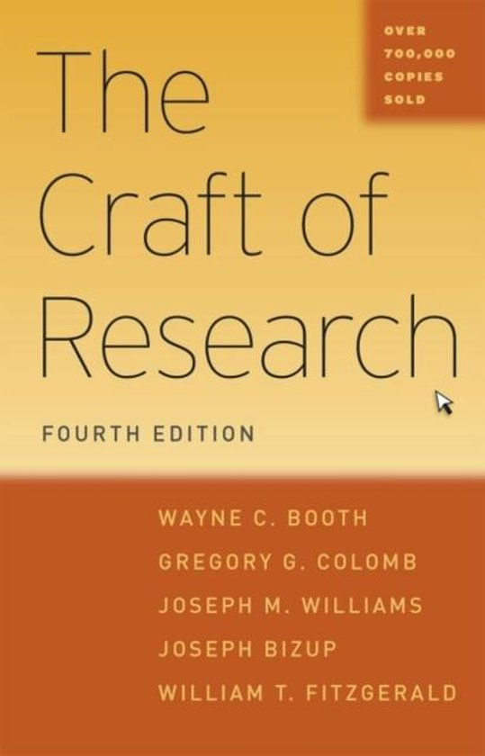
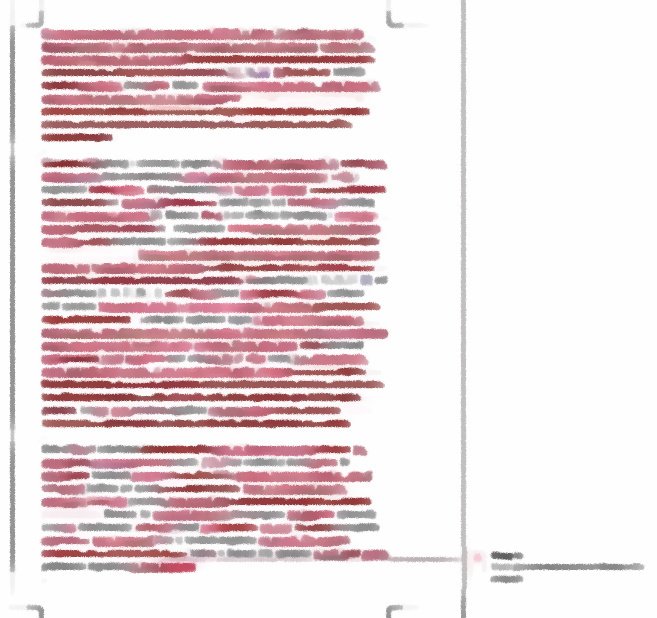
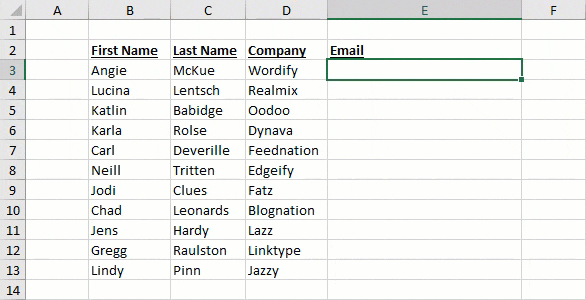
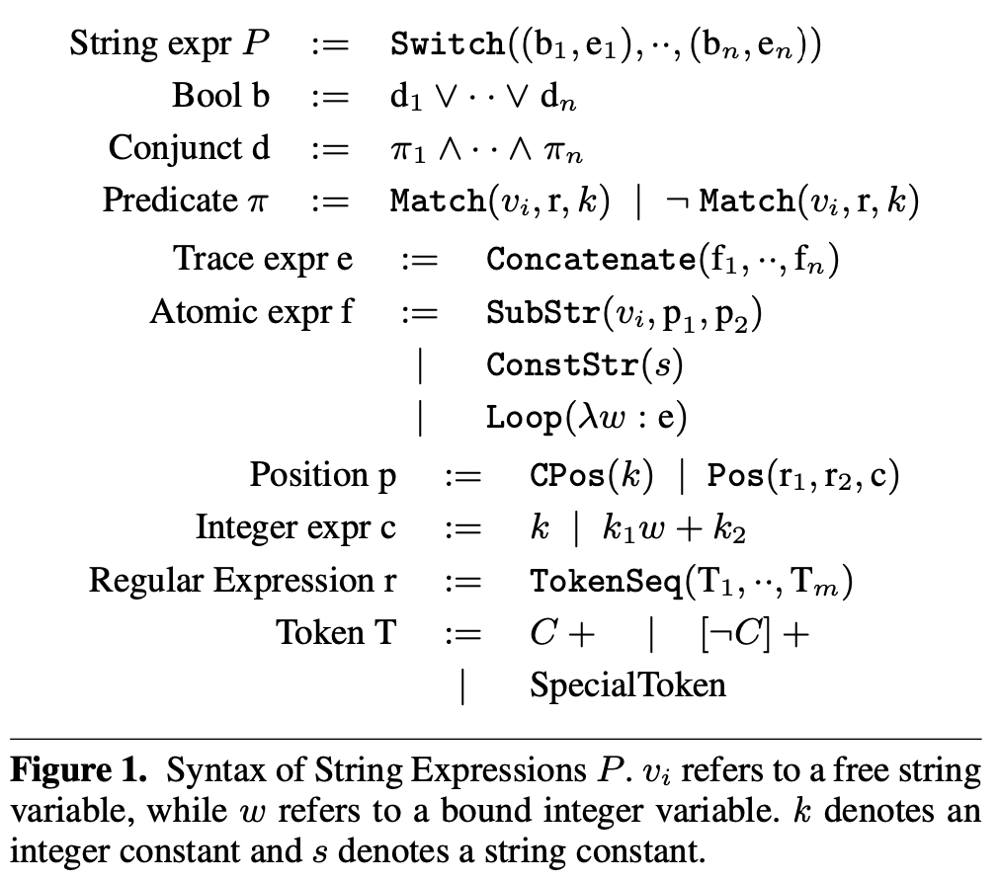
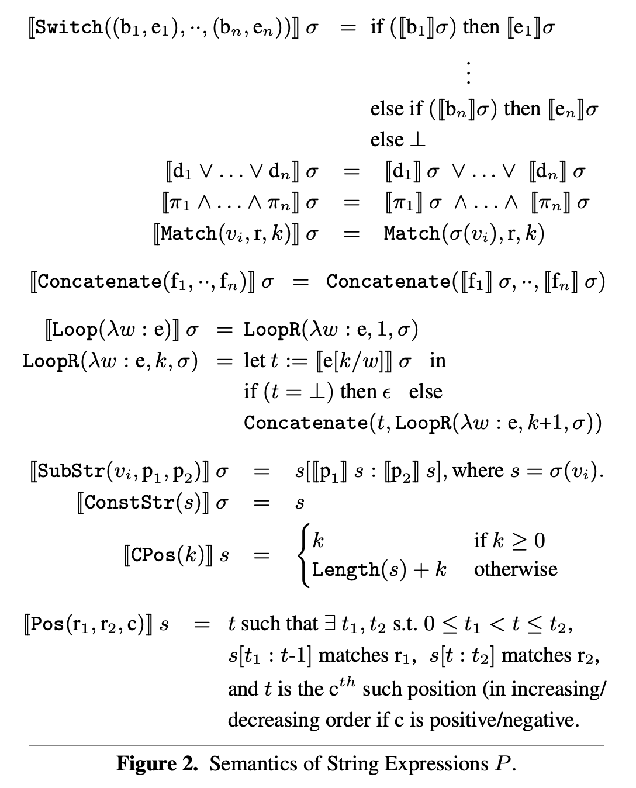
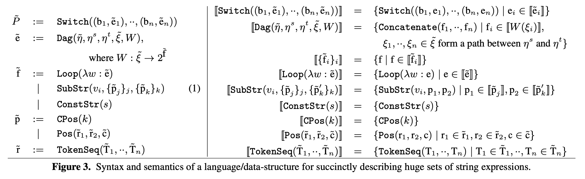
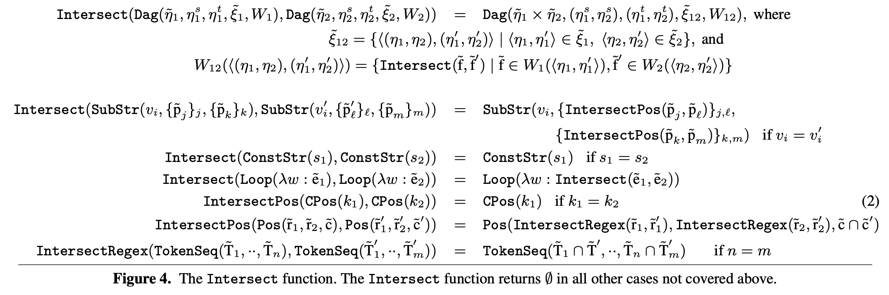
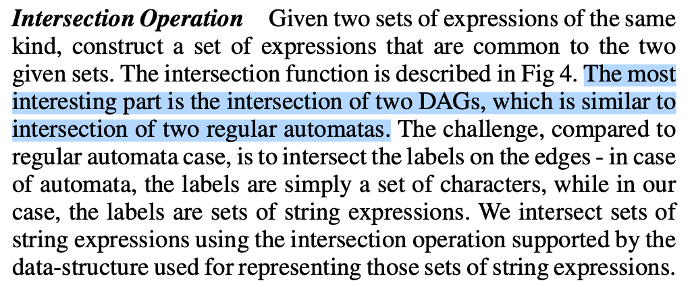
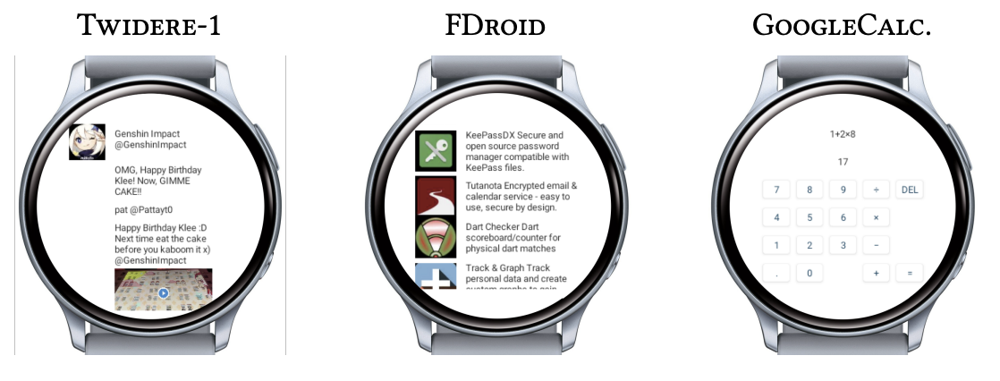

The Craft of
(Software Engineering) Research
Yanyan Jiang
Welcome!
Nice to see you all!
You may not get the idea of doing “serious research”
- This is why we created this course!
Overview
Check course homepage
- Video playbacks will be available
- Assignment 1 due: Oct 9
In this lecture
- Introduction to software engineering research
- How to read research papers
The Craft of Research
What is Research?
“In the broadest terms, we do research whenever we gather information to answer a question that solves a problem.”
——The Craft of Research

Example
- PROBLEM: To settle a bet, I need to know when Michael Jordan was born.
- RESEARCH: You Google “Michael Jordan birthday.”
Academic Research
Solving
significant problems withnovel insights.
This is a key difference between research projects and assignments
- Usually nobody has a clear answer
Research papers
- A piece of work that
teaches peers a lesson .- Peers: researchers, practitioners, ...
- The crux of publishing papers for juniors: your readers know much better than you do
The Craft of
Software Engineering Research
Two Fundamental Questions
- What is a Software?
- What is Software's Engineering?
Software Engineering's Big Problem
How to build and understand software?
Make 码农 an easier life
- Faster (productivity)
- Better (quality)
Ultimate goal
- Take over human's role in software development
More Specific Topics (Problems)
See ICSE's call for papers
- API design and evolution
- Apps and app store analysis
- Debugging and fault localization
- Evolution and maintenance
- Feedback, user, and requirements management...
“ICSE, the IEEE/ACM International Conference on Software Engineering, is the premier software engineering conference. Since 1975, ICSE provides a forum where researchers, practitioners, and educators gather together to present and discuss the most recent innovations, trends, experiences and issues in the field of software engineering.”
Examples
“Empirical and human study for understanding”
- What happens to a programmer's brain (ICSE'20)
“Technologies for solving problems”
- Github copilot and AlphaCode
- FlashFill in Excel (POPL'11)
- AddressSanitizer (ATC'12)
For fun and profits
- Solve hard problems; build useful tools!
- A quick test for evaluating your work: will real engineers (e.g., Google/Facebook guys) care about your work?
Software Engineering Research: Three Easy Pieces
Reading, Writing, and Hacking
1 - Reading
- Some good papers (novel and significant)
- Studies
- Compilers; static analysis and checking
- Dynamic analysis and trace; debugging
- Testing and validation
- Verification and synthesis
- Assignment: paper presentation
- Cycled broadcast on Bilibili for 1 week
- <10% Distinguished Presentation Awards 🏅
(Reading is today's topic)
2 - Writing

Be
- Bad writing practices
- Broken logic
- Imprecise wording
- Verbose writing
- Assignment: research proposal
- <10% Distinguished Proposal Award 🏅
SUGGESTIONS
- Start writing as early as possible
- Rush into your supervisor's office and let him face-to-face revise your manuscripts
- Refused → drop PhD immediately
3 - Hacking
- Drop course if you don't know how to use Git
- (Programming assignments moved to group-private courses)
“Trivial” implementation examples
- Intercept file system calls; capture block-device traces
- Modify Android Runtime (ART) to expose a debugging interface
- Modify Java regex engine to obtain matching traces
- Parse source code via Clang/LLVM
- (Maybe non-trivial for an undergrad; trivial for experts)
How to Read
How to Find Papers?
All papers form a citation graph
- Your advisor should have given you some seed papers
- If not → drop PhD now
- If of low quality → drop PhD now
- Traverse the graph (from the seeds) to find more papers
- Favor papers in good venues (top conference/journals)
- Web resources: Google Scholar recommendations, hacker news, blogs, tweets, github repos, ...
- Textbooks: further reading (usually awesome classical papers!)
- Magazines: Communications of the ACM, IEEE Spectrum, IEEE Software, ...
How Many Should I Read?
A LOT!
- Papers: 100/year (~1000 pages, very dense)
- 2 per week
- Textbooks: 20/year (~5000 pages, very comprehensive)
- Better with online courses
- Magazines: 24/year (~2400 pages, less dense)
- Conference talks
- ...
How to Read a Paper
S. Keshav. How to read a paper, ACM SIGCOMM Computer Communication Review, 3(37), 2007.
Three-pass approach
- Quick scan
- category, context, correctness, contributions, clarity
- Jot down the key points
- read with care, but ignore details as proofs
- Virtual re-implement
- re-create the work as if you were the author
How to Read a Paper (cont'd)
A “machine-learning” approach
- New problems
- Back prop: why didn't I notice this important problem?
- Old problems
- Mask the solution and try (like training a Transformer!)
- Back prop: why didn't I figure out this solution?
- Afterward
- Watch the author's presentation to check their own understanding
Traps and Pitfalls in Paper Reading
Only papers solving my problem are relevant
- Good problem solvers have lots of hammers
This paper is limited in XXXX. What a piece of junk!
- Every paper is limited
- Be constructive: anything I can learn?
I give up!
- Not ready yet
- Get some background materials
Short Summary
- Read a lot of papers
- Read really good papers (to get “correct” tastes on research)
- Training data is crucial to DNN model quality
- 90% “top-conference” papers have nearly zero “real” contributions
- May did a very well job, but not groundbreaking
- Lots of papers have negative contributions
- Mislead junior researchers
Example
FlashFill
Sumit Gulwani. Automating string processing in spreadsheets using input-output examples (POPL'11, Most Influential Test-of-Time Paper Award in 2021)
1st pass: the problem is to find a program $P$ that generalizes existing “examples” (and 90% students stop here)

Ready for the Second Pass?

Ready for Reading This Paper?

I Cannot Hold 😂😂😂
 
(Unix is user-friendly; it's just choosy about who its friends are.)
Ready for the Second Pass?

What's this?
- A textbook algorithm in the automata theory
- (ICPC WF'08 Problem I: Password Suspects) find the count of all $n$-length passwords consistent with a given set of observations.
*123*,abcd*,a*d*4→abcd1234,123abcd4, ...
Read More.
Trust the authors: papers are self-contained. Reading them only requires textbook knowledge.
- [Corollary] Go read (good enough) textbooks if you find you can't understand a paper
- Compilers, mathematical logics, algorithms, programing language theory (optional)
Find open courses on Youtube (or Bilibili)

Ready for the 3rd Pass?
Virtually implement the paper's idea
- You may get a new paper (similar technique)!
- “Push-button synthesis of watch companions for Android apps” (ICSE'22)
- Copy-pasted the algorithm of FlashFill

Summary
Summary
Takeaways
- Research is serious
- All about solving significant problems with novel insights
- Read a lot
- Keshav's “How to read a paper”
- The Craft of Research
- Blum's advice to a beginning graduate student...
Assignment
- Assignment 1 due: Oct 9